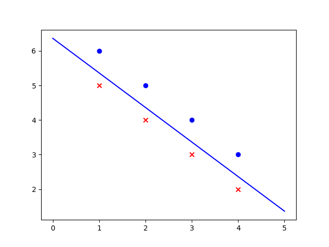
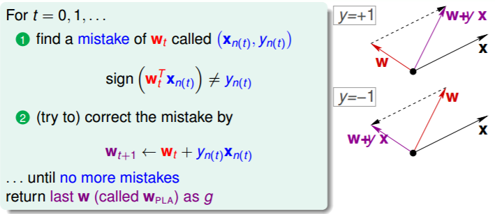
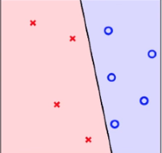
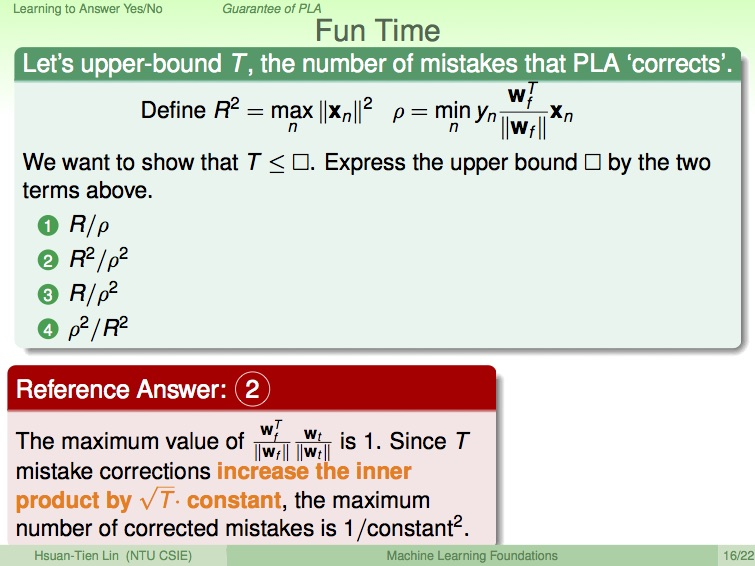

PLA(Classification)¶
Perceptron Learning Algorithm
Type Of this Sample¶
| Output Space | Data Label | Protocol | Input Space |
|---|---|---|---|
| Binary Classification | Supervised | Online | Raw |
Algorithm¶
| 找到一條線能分開兩種結果 | 如何修改線 |
|---|---|
|  |  |
可以容錯是pla變形演算法叫pocket
Implement PLA (Classification)¶
sample version¶
Code
import matplotlib.pyplot as plt import numpy as np #網路上找的dataset 可以線性分割 dataset = np.array([ ((1, 1, 5), -1), ((1, 2, 4), -1), ((1, 3, 3), -1), ((1, 4, 2), -1), ((1, 1, 6), 1), ((1, 2, 5), 1), ((1, 3, 4), 1), ((1, 4, 3), 1)]) # 1 mean to display -c/b if c=0 i was error # ax+by+c=0 #y=(-a/b)x+(-c/b) # #判斷有沒有分類錯誤，並列印錯誤率 def check_error(w, dataset): result = None error = 0 for x, s in dataset: x = np.array(x) print(w.T.dot(x)) if int(np.sign(w.T.dot(x))) != s: #帶入ax+by+c=0 如果符號不相等代表有錯誤 # T transpose result = x, s error += 1 print ("error=%s/%s" % (error, len(dataset))) return result #PLA演算法實作 #Cyclic PLA def pla(dataset): #ax+by+c=0 線性方程式的法向量 w = np.zeros(3)#法向量 index=0 while check_error(w, dataset) is not None: x, s = check_error(w, dataset) w += (s) * x #Algorithm kernel #fig by algorithm(1).md index=index+1 return w def print_image(w): #畫圖 ps = [v[0] for v in dataset] value = [v[1] for v in dataset] fig = plt.figure() ax1 = fig.add_subplot(111) #111 is control code 1 #These are subplot grid parameters encoded as a single integer. For example, "111" means "1x1 grid, first subplot" and "234" means "2x3 grid, 4th subplot". #dataset前半後半已經分割好 直接畫就是 index=0 max_x=ps[0][1] min_x=ps[0][1] for v in value: #print(index) if v>0: ax1.scatter(ps[index][1],ps[index][2], c='b', marker="o") elif v<0: ax1.scatter(ps[index][1],ps[index][2] , c='r', marker="x") else: pass if max_x<ps[index][1]: max_x=ps[index][1] if min_x>ps[index][1]: min_x=ps[index][1] index=index+1 l = np.linspace(min_x-1,max_x+1) #define the line x-axis size a,b = -w[1]/w[2], -w[0]/w[2] #a=斜率 b常數 ax1.plot(l, a*l + b, 'b-') plt.show() w = pla(dataset) print_image(w)
Optimizer Version¶
耗時⅓
Code
import matplotlib.pyplot as plt import numpy as np import random #網路上找的dataset 可以線性分割 dataset = np.array([ ((1, 1.6, 5), -1), ((1, 2, 4), -1), ((1, 3, 3), -1), ((1, 4, 2), -1), ((1, 1, 6), 1), ((1, 2, 5), 1), ((1, 3, 4), 1), ((1, 4, 3), 1)]) # 1 mean to display -c/b if c=0 i was error # ax+by+c=0 #y=(-a/b)x+(-c/b) # #判斷有沒有分類錯誤，並列印錯誤率 bad=0 def check_error(w, dataset): result = None result=[] error = 0 for x, s in dataset: x = np.array(x) print(w.T.dot(x)) if int(np.sign(w.T.dot(x))) != s: #帶入ax+by+c=0 如果符號不相等代表有錯誤 # T transpose tem=[] tem.append(x) tem.append(s) result.append(tem) error += 1 print ("error=%s/%s" % (error, len(dataset))) bad=error/len(dataset) if error==0: result=None return result #優化區塊1 每次選擇的錯誤用隨機所以不會一樣 ############################################## return result[random.randrange(0,error, 1)] #PLA演算法實作 #Cyclic PLA def pla(dataset): #ax+by+c=0 線性方程式 w = np.zeros(3) ax,plt=print_image(w) #print (w) index=0 while check_error(w, dataset) is not None: x, s = check_error(w, dataset) ##優化區塊2 把baise用隨機 讓它變動快點 x[0]=(1-bad)*x[0]*random.uniform(1,4) ############################################# w += (s) * x try: ax.lines.remove(lines[0]) except Exception: pass l = np.linspace(0,4) #define the line x-axis size a,b = -w[1]/w[2], -w[0]/w[2] #a=斜率 b常數 lines=ax.plot(l, a*l + b, 'b-') #plt.pause(0.1) print (w) index=index+1 print ("all run circel") print (index) plt.pause(111) return w def print_image(w): #畫圖 ps = [v[0] for v in dataset] value = [v[1] for v in dataset] fig = plt.figure() ax1 = fig.add_subplot(111) #111 is control code 1 #These are subplot grid parameters encoded as a single integer. For example, "111" means "1x1 grid, first subplot" and "234" means "2x3 grid, 4th subplot". #dataset前半後半已經分割好 直接畫就是 index=0 max_x=ps[0][1] min_x=ps[0][1] for v in value: #print(index) if v>0: ax1.scatter(ps[index][1],ps[index][2], c='b', marker="o") elif v<0: ax1.scatter(ps[index][1],ps[index][2] , c='r', marker="x") else: pass if max_x<ps[index][1]: max_x=ps[index][1] if min_x>ps[index][1]: min_x=ps[index][1] index=index+1 l = np.linspace(min_x-1,max_x+1) #define the line x-axis size a,b = -w[1]/w[2], -w[0]/w[2] #a=斜率 b常數 ax1.plot(l, a*l + b, 'b-') plt.ion() plt.show() return ax1,plt w = pla(dataset) print_image(w)
證明線性可分時PLA演算法會停¶
pla停不下來 有兩個原因
- 還沒跑夠
- 非線性可分

符號解釋¶
- W_{f}^{T}=真實想求的函數(通常未知)
- W_{X}=非常"接近答案"的函數
- \frac{W_{f}^{T}}{\|W_{f}\|}\frac{W_{X}}{\|W_{X}\|} \leq 1兩個正規化向量的內積最大為1
- W_{t}=某一時間點的答案
- W_{t+1}=該時間點更新後的答案
- y_{n}= {1,-1}
- y=sing(ax+b)改寫成y_{n}=sing(W_{f}^{T}x_{n})
- W_{t+1}=\color{#0000FF}{W_{t}+y_{n(t)}x_{n(t)}}修改向量的演算法核心
- X=總共需要修改的次數
Proof 1¶
已知\color{#7B68EE}{y_{n(t)}W_{f}^{T}x_{n(t)}}\geq \color{#007799}{\underset{n}{min}~y_{n}W_{f}^{T}x_{n}}>0因為線不能碰到點
\begin{aligned}
W_{f}^{T}W_{t+1}&=W_{f}^{T}(\color{#0000FF}{W_{t}+y_{n(t)}x_{n(t)}}) \\
&=W_{f}^{T}W_{t}+\color{#7B68EE}{W_{f}^{T}y_{n(t)}x_{n(t)}} \\
&\geq W_{f}^{T}W_{t}+\color{#007799}{\underset{n}{min}~y_{n}W_{f}^{T}x_{n}}\\
&>W_{f}^{T}W_{t}
\end{aligned}
Note
所以{W_f}^{T}W_{t+1} > {W_f}^{T}W_t意思是當""向量長度一樣""的時候,兩個向量內積越來越大代表越接近,也就證明了W_{t+1}越靠近答W_f
Proof 2¶
已知y_{n(t)}W_{t}^Tx_{n(t)}\leq0,因為W_{t}^T有錯所以正負號跟y_{n(t)}一定不同
\begin{aligned}
\| W_{t+1} \|^2&=\|W_{t}+y_{n(t)}x_{n(t)}\|^2 \\
&=\|W_{t}\|^2+2y_{n(t)}W_{t}^{T}x_{n(t)}+\|y_{n(t)}x_{n(t)}\|^2\\
&\leq \|W_{t}\|^2+0+\|y_{n(t)}x_{n(t)}\|^2\\
&\leq \|W_{t}\|^2+\underset{n}{max}\|x_{n}\|^2
\end{aligned}
Finally Proof¶
Question
\frac{W_{f}^{T}}{\|W_{f}\|}\frac{W_{X}}{\|W_{X}\|}\geq ?
By Proof 1:
\begin{aligned}
W_{f}^{T}W_{X}&\geq W_{f}^{T}W_{X-1}+\underset{n}{min}~y_{n}W_{f}^{T}x_{n}\\
&\geq W_{f}^{T}W_{0}+X*\underset{n}{min}~y_{n}W_{f}^{T}x_{n}\\
&\geq X*\underset{n}{min}~y_{n}W_{f}^{T}x_{n}
\end{aligned}
By Proof 2:
\begin{aligned}
\|W_{X}\|^2&\leq \|W_{X-1}\|^2+\underset{n}{max}\|x_{n}\|^2\\
&\leq \|W_{0}\|^2+X*\underset{n}{max}\|x_{n}\|^2\\
&\leq X*\underset{n}{max}\|x_{n}\|^2
\end{aligned}
We have
\begin{cases}
W_{f}^{T}W_{X}\geq X*\underset{n}{min}~y_{n}W_{f}^{T}x_{n}\\
\|W_{X}\|^2\leq X*\underset{n}{max}\|x_{n}\|^2
\end{cases}
When these two vector's angle is close to 0
\frac{ {W_{f}}^{T}}{\|W_{f}\|}\frac{W_{X}}{\|W_{X}\|}\approx 1
Answer
\begin{aligned}
\frac{W_{f}^{T}}{\|W_{f}\|}\frac{W_{X}}{\|W_{X}\|}&\geq \frac{X*\underset{n}{min}~y_{n}W_{f}^{T}x_{n}}{\|W_{f}\|\sqrt[]{X}*\underset{n}{max}\|x_{n}\|}\\
1&\geq \sqrt[]{X} *\frac{\underset{n}{min}~y_{n}W_{f}^{T}x_{n}}{\|W_{f}\| * \underset{n}{max}\|x_{n}\|}
\end{aligned}
Conclusion¶
"So we know PLA Algorithm have upper bound of runing time X"
{(\frac{\|W_{f}\| * \underset{n}{max}\|x_{n}\|}{\underset{n}{min}~y_{n}W_{f}^{T}x_{n}})}^2 \geq X
該證明實務上的缺點
公式算不出多久會停 因為W_f是未知的 ,我們只證明出 當線性可分時 pla會停 有上限, 但上限多少不知道
練習題¶
